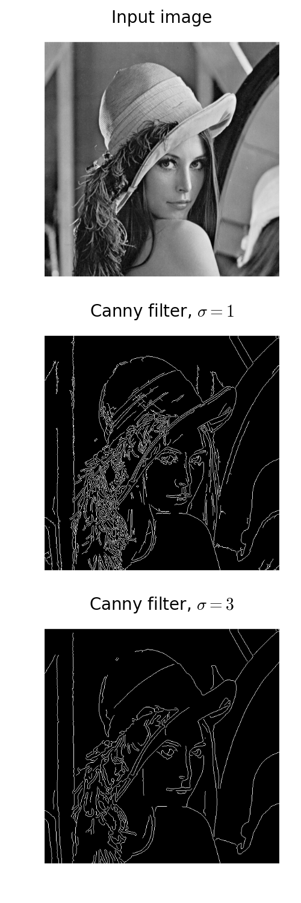

Canny edge detector¶
The Canny filter is a multi-stage edge detector. It uses a filter based on the derivative of a Gaussian in order to compute the intensity of the gradients.The Gaussian reduces the effect of noise present in the image. Then, potential edges are thinned down to 1-pixel curves by removing non-maximum pixels of the gradient magnitude. Finally, edge pixels are kept or removed using hysteresis thresholding on the gradient magnitude.
The Canny has three adjustable parameters: the width of the Gaussian (the noisier the image, the greater the width), and the low and high threshold for the hysteresis thresholding.
import matplotlib.pyplot as plt
import SimpleITK as sitk
image = sitk.ReadImage('../example_images/lena_bw.png')
image = sitk.Cast(image, sitk.sitkFloat64)
# Compute the Canny filter for two values of sigma
edges1 = sitk.CannyEdgeDetection(image, lowerThreshold=5, upperThreshold=10,
variance=[1, 1])
edges2 = sitk.CannyEdgeDetection(image, lowerThreshold=5, upperThreshold=10,
variance=[3, 3])
# Convert to numpy array for display
image = sitk.GetArrayFromImage(image)
edges1 = sitk.GetArrayFromImage(edges1)
edges2 = sitk.GetArrayFromImage(edges2)
# display results
fig, (ax1, ax2, ax3) = plt.subplots(nrows=3, ncols=1, figsize=(5, 15),
sharex=True, sharey=True)
ax1.imshow(image, cmap=plt.cm.gray)
ax1.axis('off')
ax1.set_title('Input image', fontsize=20)
ax2.imshow(edges1, cmap=plt.cm.gray)
ax2.axis('off')
ax2.set_title('Canny filter, $\sigma=1$', fontsize=20)
ax3.imshow(edges2, cmap=plt.cm.gray)
ax3.axis('off')
ax3.set_title('Canny filter, $\sigma=3$', fontsize=20)
fig.tight_layout()
plt.show()
Total running time of the script: ( 0 minutes 0.766 seconds)